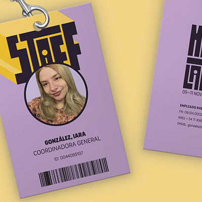
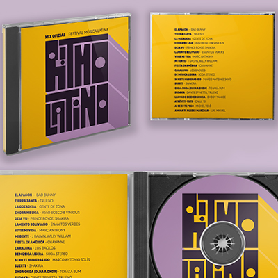
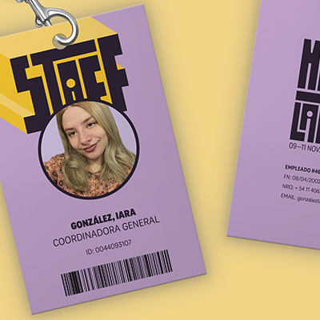
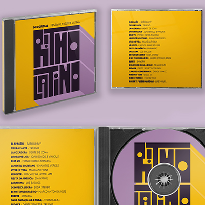

¡Hola! Soy Iara González. Actuamente me desempeño como Customer Support Team Lead en Prex y como estudiante de Diseño y Comunicación Social en la Universidad de Lanús. Desde joven me apasiona el diseño y tengo conocimientos avanzados en Adobe Illustrator, Photoshop, InDesign y After Effects, con deseos de seguir aprendiendo nuevas herramientas.
Me gusta adquirir nuevos conocimientos constantemente y soy disciplinada, resolutiva y también muy auto-crítica. Tengo experiencia en trabajo en equipo y puedo trabajar de manera individual o conjunta.
Siempre busco oportunidades para ganar experiencia en el diseño y ampliar mi portfolio. ¡Gracias por leerme!


 


